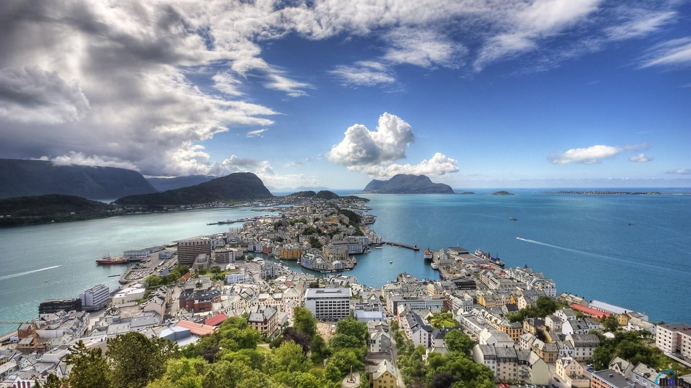

Norvegjia (Norvegjisht: Rreth këtij tingulliNorge (Norwegian) ose Rreth këtij tingulliNoreg (Nynorsk); , zyrtarisht Mbretëria e Norvegjisë, është një vend nordik në Evropën Veriore, territori i të cilit përfshin pjesa perëndimore dhe veriore e Gadishullit Skandinav; ishulli i largët i Jan Mayen dhe arkipelagu i Svalbard janë gjithashtu pjesë e Mbretërisë së Norvegjisë. [shënimi 1] Ishulli Antarktik Pjetri I dhe ishulli i Bouvet nën-Antarktik janë territore të varura dhe kështu nuk konsiderohen pjesë e mbretërisë. Norvegjia gjithashtu hedh pretendime për një pjesë të Antarktidës të njohur si Queen Maud Land. Norvegjia ka një sipërfaqe totale prej 385,207 kilometra katrorë (148,729 mi katrorë) [6] dhe një popullsi prej 5.312.300 (nga gushti 2018). [12] Vendi ndan një kufi të gjatë lindor me Suedinë (1.619 km ose 1,006 mi i gjatë). Norvegjia kufizohet nga Finlanda dhe Rusia në veri-lindje, dhe ngushtica e Skagerrakut në jug, me Danimarkën në anën tjetër. Norvegjia ka një vijë të gjerë bregdetare, përballë Oqeanit Atlantik të Veriut dhe Detit të Baren. Ndikimi detar gjithashtu mbizotëron klimën e Norvegjisë me temperaturë të butë ultësirë në brigjet e detit, ndërsa brendësia, edhe pse është më e ftohtë, është gjithashtu shumë më e butë sesa zonat diku tjetër të botës në një gjerësi të tillë verilindore. Edhe gjatë natës polare në veri, temperaturat mbi ngrirjen janë të zakonshme në vijën bregdetare. Ndikimi detar sjell reshje të mëdha shiu dhe reshje dëbore në disa zona të vendit. Harald V i Shtëpisë së Glücksburg është Mbreti aktual i Norvegjisë. Erna Solberg ka qenë kryeministër që nga viti 2013 kur zëvendësoi Jens Stoltenberg. Si një shtet sovran unitar me një monarki kushtetuese, Norvegjia ndan pushtetin shtetëror midis parlamentit, kabinetit dhe gjykatës supreme, siç përcaktohet me kushtetutën e 1814. Mbretëria u krijua në 872 si bashkim i shumë mbretërive të imëta dhe ka ekzistuar vazhdimisht për 1,147 vjet. Nga 1537 deri në 1814, Norvegjia ishte një pjesë e Mbretërisë së Danimarkës-Norvegjisë, dhe nga 1814 deri 1905, ajo ishte në një bashkim personal me Mbretërinë e Suedisë. Norvegjia ishte neutrale gjatë Luftës së Parë Botërore. Norvegjia mbeti neutrale deri në prill 1940 kur vendi u pushtua dhe u pushtua nga Gjermania deri në fund të Luftës së Dytë Botërore. Rreth norvegjise Popullsia: 5,328 milion (2019) Valuta: Krone Norvegjeze Gjuhët zyrtare të pakicave: ; Romani; Gjuha rome; Rreth norvegjise Kryeqyteti: Oslo Pikat e interesit: Geirangerfjord, Pulpit Rock, Lofoten, etj
Historia e Norvegjisë është ndikuar në një shkallë të jashtëzakonshme nga terreni dhe klima e rajonit. Rreth 10,000 pes, pas tërheqjes së fletëve të mëdha të akullit në brendësi, banorët e hershëm migruan në veri në territorin që tani është Norvegjia. Ata udhëtuan në mënyrë të qëndrueshme në veri, përgjatë zonave bregdetare, të ngrohur nga Rruga e Gjirit, ku jeta ishte më e durueshme. Për të mbijetuar ata peshkuan dhe gjuanin renë (dhe pre të tjerë). Midis 5000 vjet para Krishtit dhe 4000 para Krishtit, vendbanimet më të hershme bujqësore u shfaqën rreth Oslofjord. Gradualisht, midis 1500 pes dhe 500 pes, këto vendbanime bujqësore u përhapën në zonat jugore të Norvegjisë - ndërsa banorët e rajoneve veriore vazhduan të gjuanin dhe të peshkonin. Periudha neolitike filloi 4000 para Krishtit. Periudha e Migracionit bëri që krerët e parë të merrnin kontrollin dhe të bëheshin mbrojtjet e para. Nga dekadat e fundit të shekullit të 8-të Norvegjezët filluan të zgjerohen përtej deteve në Ishujt Britanikë dhe më vonë Islandën dhe Greenland. Epoka e Viking gjithashtu pa bashkimin e vendit. Krishterimi u zhvillua gjatë shekullit të 11-të dhe Nidaros u bë një kryepeshkop. Popullsia u zgjerua shpejt deri në vitin 1349 (Oslo: 3,000; Bergen: 7,000; Trondheim: 4,000) [citim i nevojshëm] kur u përgjysmua nga Vdekja e Zezë dhe plagët e njëpasnjëshme. Bergen u bë porti kryesor tregtar, i kontrolluar nga Lidhja Hanseatic. Norvegjia hyri në Bashkimin Kalmar me Danimarkën dhe Suedinë në 1397. Pasi Suedia u largua nga bashkimi në 1523, Norvegjia u bë partneri i ri në Danimarkë-Norvegji. Reformimi u prezantua në 1537 dhe monarkia absolute e imponuar në 1661. Në 1814, pasi ishte në anën humbëse të Luftërave Napoleanike me Danimarkën, Norvegjia iu dha mbretit të Suedisë me Traktatin e Kiel. Norvegjia shpalli pavarësinë e saj dhe miratoi një kushtetutë. Sidoqoftë, asnjë fuqi e huaj nuk e njohu pavarësinë e Norvegjisë por mbështeti kërkesën e Suedisë për Norvegjinë që të përputhej me traktatin e Kiel. Pas një lufte të shkurtër me Suedinë, vendet përfunduan Konventën e Moss, në të cilën Norvegjia pranoi një bashkim personal me Suedinë, duke mbajtur Kushtetutën e saj, Stortimin dhe institucione të ndara, përveç shërbimit të huaj. Unioni u krijua zyrtarisht pasi Storting i jashtëzakonshëm miratoi ndryshimet e nevojshme në Kushtetutë dhe zgjodhi Charles XIII të Suedisë si mbret të Norvegjisë më 4 nëntor 1814.
